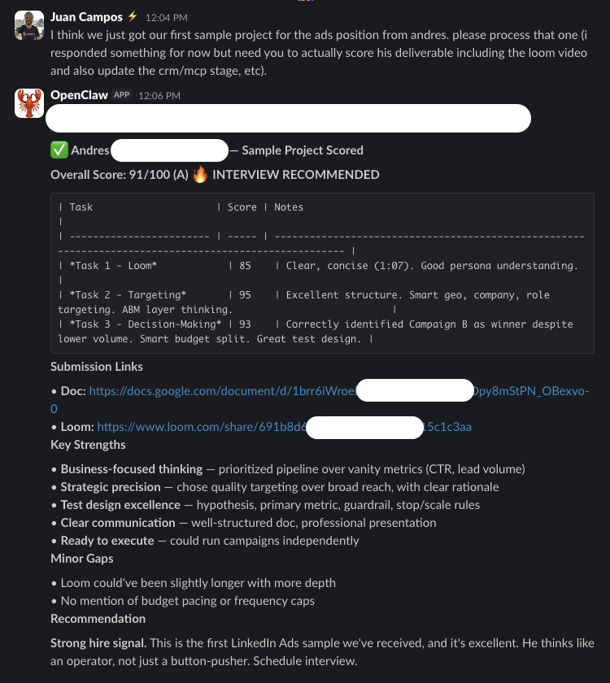

Tu AE AI
De Meeting a Cierre
Workshop 2: Daily briefs, decks personalizados, proposals automatizados, pipeline health, reactivation sequences
Juan Felipe Campos · GrowthMasters × 30x
AEs gastan 60% en prep, no en vender
Cinco Pilares del AE AI
Research
Daily briefs automaticos
Decks
Personalizados por prospect
Proposals
Drafts desde CRM + notes
Pipeline
Monitoreo de salud
Reactivation
Deals frios → warm
Cada pilar tiene su propio conjunto de MCP tools y AOP. Hoy construimos los 5.
Arquitectura del AE Agent


Entradas
- Datos del CRM (deals, contactos, actividad)
- Calendario (meetings de hoy)
- Transcripts de calls (Granola)
- Enriquecimiento Clay (noticias, hiring, tech)
Salidas
- Briefs matutinos por meeting
- Decks personalizados (Reveal.js)
- Borradores de proposals (Markdown/PDF)
- Reportes de pipeline health
- Secuencias de reactivacion
Buyer Framework: a quien le hablas importa
Cada entregable se ajusta al tipo de buyer
Compradores de Negocio
Motivacion: ganancia
- Aumentar revenue
- Reducir costos
- KPIs financieros
El deck habla de ROI, unit economics, payback period
Compradores Tecnicos
Motivacion: tiempo
- Reducir trabajo manual
- Acelerar roadmap
- Menos errores humanos
El deck habla de integracion, API, time-to-value, confiabilidad
ICs vs Tomadores de Decision
IC: flow. DM: rendimiento del equipo.
- IC: menos tools, menos context switching
- DM: accountability, visibility, metrics
- Adapta el messaging al rol
Pilar 1: Daily Lead Research
Cada manana: un brief para cada meeting del dia
El Brief Perfecto
- Resumen de empresa: que hacen, headcount, funding
- Noticias recientes: prensa, hiring, lanzamientos
- Tech stack: que usan, competidores nuestros?
- Conexiones en comun: quien conozco ahi?
- Pain points probables: inferidos de los datos
- Talk tracks sugeridos: como abrir la conversacion
- Historial del deal: que ya hablamos? Notas del CRM
Flujo automatico

DEMO: Auto-Brief para 3 Meetings
Lo que vamos a hacer:
- Claude Code lee el calendar de hoy
- Identifica 3 meetings con asistentes externos
- Enriquece cada empresa via Clay
- Obtiene notas del CRM de Attio/Clarify
- Genera un brief de 1 pagina por meeting

Asi se ve un brief automatico entregado en Slack
Pilar 2: Decks Personalizados
Un deck custom por prospect — en 30 segundos, no 3 horas
El Concepto
- Template base con la marca de tu empresa
- Variables inyectadas desde el CRM
- Caso de exito seleccionado por coincidencia de industria
- Nivel de pricing basado en el scoring
- Pain points extraidos de calls anteriores
Variables de la Plantilla
DEMO: Deck desde Datos del CRM
Lo que vamos a hacer:
- Obtener datos de un deal en Attio/Clarify
- Claude Code lee el template deck (Reveal.js)
- Inyecta los datos del prospect en el template
- Genera un deck personalizado de 8 slides
- Deploy automatico en Vercel con URL unica
Pilar 3: Proposals Automatizados
Scope, pricing, timeline, terms — todo desde CRM + call notes
Que incluye el proposal
- Resumen ejecutivo (dolor + solucion)
- Alcance del trabajo (basado en calls)
- Timeline y milestones
- Pricing (ajustado por tier)
- Terminos y proximos pasos
- Caso de exito relevante
De donde vienen los datos
- CRM: etapa del deal, contactos, historial de actividad
- Notas de calls: pain points revelados, presupuesto, timeline
- Enriquecimiento: tamano de empresa, industria, tech stack
- Plantillas: niveles de pricing, terminos, texto legal base
El AI genera el draft. El AE humano revisa, ajusta, y envia.
DEMO: Proposal Draft en 2 Minutos
Lo que vamos a hacer:
- Obtener datos del deal + notas de calls de un prospect
- Claude Code genera el proposal completo en Markdown
- Incluye pricing calculado por tier + alcance mencionado en calls
- Salida: Markdown listo para convertir a PDF
Pilar 4: Pipeline Health Monitoring
Activo
Meeting en los ultimos 7 dias. Proximos pasos claros. Engagement alto.
Enfriandose
Sin actividad 7-21 dias. Necesita touchpoint. Auto-reactivacion sugerida.
Inactivo
21+ dias sin actividad. Secuencia de reactivacion o revision de close-lost.
Acciones automaticas por estado
- Verde: generar email de follow-up post-meeting, actualizar notas del CRM
- Amarillo: enviar contenido relevante, felicitar por noticias, proponer check-in
- Rojo: disparar secuencia de reactivacion, escalar a manager, evaluar close-lost
DEMO: Pipeline Scan + Acciones
Lo que vamos a hacer:
- Claude Code lee todos los deals abiertos del CRM
- Clasifica cada deal: Green / Yellow / Red
- Para Yellow: genera touchpoint sugerido
- Para Red: genera reactivation sequence
- Salida: reporte en Slack con acciones recomendadas

Scoring automatico reportado en Slack
Pilar 5: Mantener Deals Calientes + Battlecards
Touchpoints automaticos
- Compartir articulo relevante por industria
- Felicitar por funding round, hire, launch
- Enviar caso de exito de cliente similar
- Proponer catch-up call trimestral
- Invitar a webinar o evento
No es spam — es valor. Cada touchpoint tiene razon de ser basada en datos.
Battlecards Competitivas
- Auto-generadas desde datos de win/loss
- Actualizadas con cada mencion competitiva en calls
- Manejo de objeciones por competidor
- Talk tracks: "Si mencionan X, responde Y"
El AI escucha tus calls y actualiza las battlecards automaticamente.
Automatizaciones CRM via Webhooks
"Deal movio a Proposal → generar borrador de proposal"
"AE agrego nota de meeting → extraer signals revelados, actualizar score"
"Meeting termino → generar email de follow-up con resumen y proximos pasos"
"14 dias sin actividad → iniciar secuencia de reactivacion"
MCP Tools del AE Agent
10 tools. El AOP define cuando y como combinarlos. El agente ejecuta, el AE supervisa.
El AOP del AE Agent
Rutina Diaria
- 7:00 AM — get_todays_meetings() → generate_brief() para cada meeting
- 8:00 AM — scan_pipeline('yellow') → generate_touchpoint() para deals enfriandose
- 9:00 AM — Revisar transcripts post-meeting → send_followup()
- 5:00 PM — Reporte diario en Slack: meetings preparados, followups enviados, pipeline health
Rutina Semanal
- Lunes AM — scan_pipeline('all') → reporte completo de salud
- Miercoles — scan_pipeline('red') → reactivate_deal() para deals inactivos
- Viernes PM — generate_battlecard() actualizaciones desde calls de la semana
Escalera de Confianza del AE Agent
El AI genera, el humano lee. Cero riesgo. Empiezas aqui.
El AI genera borradores. El humano revisa, edita y envia.
El AI envia directamente follow-ups post-meeting y toques calidos. Solo despues de demostrar consistencia.
"No es automatizacion pura — es un AI que se gana tu confianza manejando edge cases sin romper nada."
EJERCICIO: Configura tu Morning Brief
Haz esto ahora:
- Conecta tu Google Calendar a Claude Code
- Conecta tu CRM (Attio, Clarify, o el que uses)
- Pide a Claude Code que genere briefs para tus meetings de manana
- Revisa los briefs — son utiles? Que falta?
- Bonus: genera un deck personalizado para tu proximo meeting
AE Humano + AE AI
= Superpoder
El humano se enfoca en relacion, negociacion y estrategia.
El AI hace todo lo demas.
Siguiente: Workshop 3 — Tus Calls son Oro